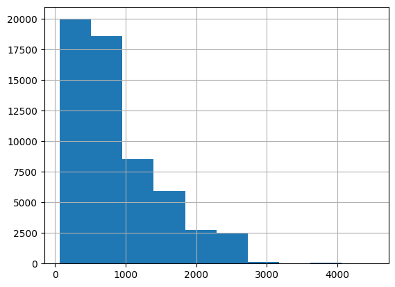
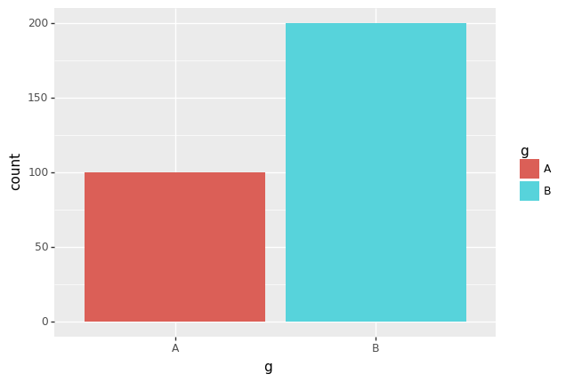
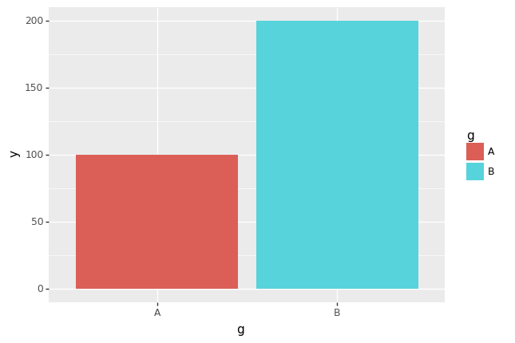
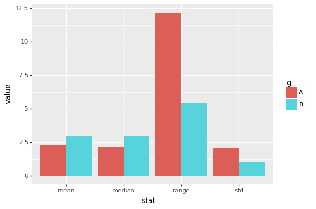
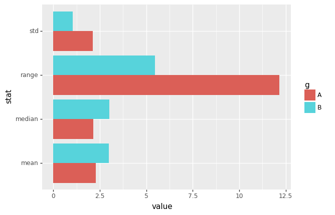
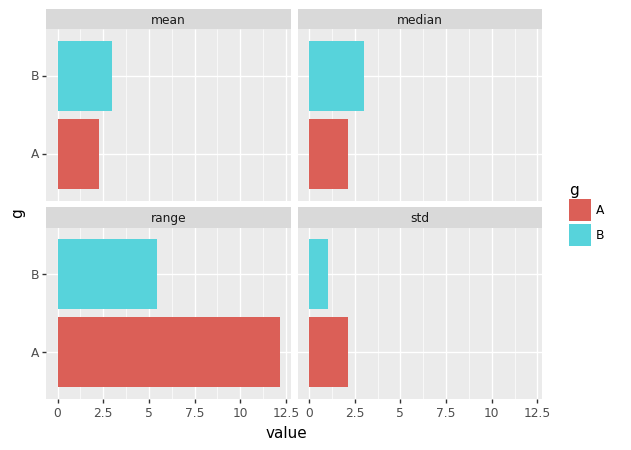
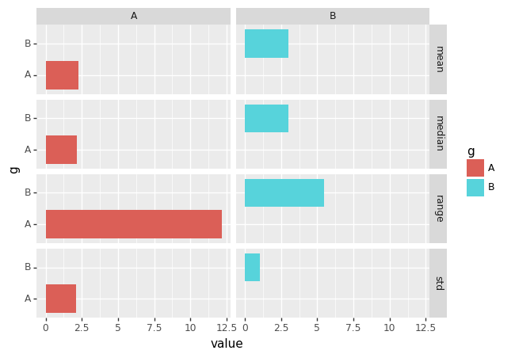
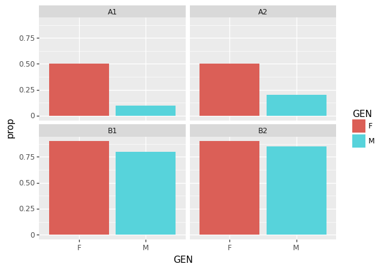

import pandas as pd
import numpy as np07. tidydata
python
groupyby
df=pd.read_csv('https://raw.githubusercontent.com/PacktPublishing/Pandas-Cookbook/master/data/flights.csv')
df.head()| MONTH | DAY | WEEKDAY | AIRLINE | ORG_AIR | DEST_AIR | SCHED_DEP | DEP_DELAY | AIR_TIME | DIST | SCHED_ARR | ARR_DELAY | DIVERTED | CANCELLED | |
|---|---|---|---|---|---|---|---|---|---|---|---|---|---|---|
| 0 | 1 | 1 | 4 | WN | LAX | SLC | 1625 | 58.0 | 94.0 | 590 | 1905 | 65.0 | 0 | 0 |
| 1 | 1 | 1 | 4 | UA | DEN | IAD | 823 | 7.0 | 154.0 | 1452 | 1333 | -13.0 | 0 | 0 |
| 2 | 1 | 1 | 4 | MQ | DFW | VPS | 1305 | 36.0 | 85.0 | 641 | 1453 | 35.0 | 0 | 0 |
| 3 | 1 | 1 | 4 | AA | DFW | DCA | 1555 | 7.0 | 126.0 | 1192 | 1935 | -7.0 | 0 | 0 |
| 4 | 1 | 1 | 4 | WN | LAX | MCI | 1720 | 48.0 | 166.0 | 1363 | 2225 | 39.0 | 0 | 0 |
특정변수기준으로 나누고 평균을 구하자.
- 방법 1
df.groupby("AIRLINE").aggregate({"ARR_DELAY" : "mean"})| ARR_DELAY | |
|---|---|
| AIRLINE | |
| AA | 5.542661 |
| AS | -0.833333 |
| B6 | 8.692593 |
| DL | 0.339691 |
| EV | 7.034580 |
| F9 | 13.630651 |
| HA | 4.972973 |
| MQ | 6.860591 |
| NK | 18.436070 |
| OO | 7.593463 |
| UA | 7.765755 |
| US | 1.681105 |
| VX | 5.348884 |
| WN | 6.397353 |
- 방법 2
df.groupby("AIRLINE").aggregate({"ARR_DELAY":np.mean})| ARR_DELAY | |
|---|---|
| AIRLINE | |
| AA | 5.542661 |
| AS | -0.833333 |
| B6 | 8.692593 |
| DL | 0.339691 |
| EV | 7.034580 |
| F9 | 13.630651 |
| HA | 4.972973 |
| MQ | 6.860591 |
| NK | 18.436070 |
| OO | 7.593463 |
| UA | 7.765755 |
| US | 1.681105 |
| VX | 5.348884 |
| WN | 6.397353 |
- 방법 3
df.groupby("AIRLINE")["ARR_DELAY"].agg("mean")AIRLINE
AA 5.542661
AS -0.833333
B6 8.692593
DL 0.339691
EV 7.034580
F9 13.630651
HA 4.972973
MQ 6.860591
NK 18.436070
OO 7.593463
UA 7.765755
US 1.681105
VX 5.348884
WN 6.397353
Name: ARR_DELAY, dtype: float64- 방법 4
df.groupby("AIRLINE")["ARR_DELAY"].agg(np.mean)AIRLINE
AA 5.542661
AS -0.833333
B6 8.692593
DL 0.339691
EV 7.034580
F9 13.630651
HA 4.972973
MQ 6.860591
NK 18.436070
OO 7.593463
UA 7.765755
US 1.681105
VX 5.348884
WN 6.397353
Name: ARR_DELAY, dtype: float64- 방법 5
df.groupby("AIRLINE")["ARR_DELAY"].mean()AIRLINE
AA 5.542661
AS -0.833333
B6 8.692593
DL 0.339691
EV 7.034580
F9 13.630651
HA 4.972973
MQ 6.860591
NK 18.436070
OO 7.593463
UA 7.765755
US 1.681105
VX 5.348884
WN 6.397353
Name: ARR_DELAY, dtype: float64- 방법 2와 방법 4는 사용자정의 함수를 쓸 수 있다는 장점이 있음.
def f(x) : return -np.mean(x)df.groupby("AIRLINE").agg({"ARR_DELAY" : f})| ARR_DELAY | |
|---|---|
| AIRLINE | |
| AA | -5.542661 |
| AS | 0.833333 |
| B6 | -8.692593 |
| DL | -0.339691 |
| EV | -7.034580 |
| F9 | -13.630651 |
| HA | -4.972973 |
| MQ | -6.860591 |
| NK | -18.436070 |
| OO | -7.593463 |
| UA | -7.765755 |
| US | -1.681105 |
| VX | -5.348884 |
| WN | -6.397353 |
df.groupby(by='AIRLINE').agg({'ARR_DELAY':lambda x: -np.mean(x)})| ARR_DELAY | |
|---|---|
| AIRLINE | |
| AA | -5.542661 |
| AS | 0.833333 |
| B6 | -8.692593 |
| DL | -0.339691 |
| EV | -7.034580 |
| F9 | -13.630651 |
| HA | -4.972973 |
| MQ | -6.860591 |
| NK | -18.436070 |
| OO | -7.593463 |
| UA | -7.765755 |
| US | -1.681105 |
| VX | -5.348884 |
| WN | -6.397353 |
- 입력이 여러개인 사용자 정의 함수도 사용가능함
def f(x,y): return np.mean(x)**y df.groupby(by='AIRLINE')['ARR_DELAY'].agg(f,2)AIRLINE
AA 30.721086
AS 0.694444
B6 75.561166
DL 0.115390
EV 49.485310
F9 185.794656
HA 24.730460
MQ 47.067715
NK 339.888677
OO 57.660681
UA 60.306954
US 2.826113
VX 28.610564
WN 40.926120
Name: ARR_DELAY, dtype: float64df.groupby(by='AIRLINE').agg({'ARR_DELAY': lambda x: f(x,2)})| ARR_DELAY | |
|---|---|
| AIRLINE | |
| AA | 30.721086 |
| AS | 0.694444 |
| B6 | 75.561166 |
| DL | 0.115390 |
| EV | 49.485310 |
| F9 | 185.794656 |
| HA | 24.730460 |
| MQ | 47.067715 |
| NK | 339.888677 |
| OO | 57.660681 |
| UA | 60.306954 |
| US | 2.826113 |
| VX | 28.610564 |
| WN | 40.926120 |
AIRLINE,WEEKDAY \(\to\) {CANCELLED: sum}
df.groupby(["AIRLINE","WEEKDAY"]).agg({"CANCELLED":sum})| CANCELLED | ||
|---|---|---|
| AIRLINE | WEEKDAY | |
| AA | 1 | 41 |
| 2 | 9 | |
| 3 | 16 | |
| 4 | 20 | |
| 5 | 18 | |
| ... | ... | ... |
| WN | 3 | 18 |
| 4 | 10 | |
| 5 | 7 | |
| 6 | 10 | |
| 7 | 7 |
98 rows × 1 columns
AIRLINE,WEEKDAY \(\to\) {CANCELLED: sum, mean} , {DIVERTED: sum, mean}
df.groupby(["AIRLINE","WEEKDAY"]).agg({"CANCELLED" : [sum,np.mean],
"DIVERTED" : [sum,np.mean],
})| CANCELLED | DIVERTED | ||||
|---|---|---|---|---|---|
| sum | mean | sum | mean | ||
| AIRLINE | WEEKDAY | ||||
| AA | 1 | 41 | 0.032106 | 6 | 0.004699 |
| 2 | 9 | 0.007341 | 2 | 0.001631 | |
| 3 | 16 | 0.011949 | 2 | 0.001494 | |
| 4 | 20 | 0.015004 | 5 | 0.003751 | |
| 5 | 18 | 0.014151 | 1 | 0.000786 | |
| ... | ... | ... | ... | ... | ... |
| WN | 3 | 18 | 0.014118 | 2 | 0.001569 |
| 4 | 10 | 0.007911 | 4 | 0.003165 | |
| 5 | 7 | 0.005828 | 0 | 0.000000 | |
| 6 | 10 | 0.010132 | 3 | 0.003040 | |
| 7 | 7 | 0.006066 | 3 | 0.002600 | |
98 rows × 4 columns
AIRLINE,WEEKDAY \(\to\) {CANCELLED: sum, mean, size} , {AIR_TIME: mean,var}
df.groupby(["AIRLINE","WEEKDAY"]).agg({ "CANCELLED" : [sum,np.mean,len],
"AIR_TIME" : [np.mean,np.var]})| CANCELLED | AIR_TIME | |||||
|---|---|---|---|---|---|---|
| sum | mean | len | mean | var | ||
| AIRLINE | WEEKDAY | |||||
| AA | 1 | 41 | 0.032106 | 1277 | 147.610569 | 5393.806723 |
| 2 | 9 | 0.007341 | 1226 | 143.851852 | 5359.890719 | |
| 3 | 16 | 0.011949 | 1339 | 144.514005 | 5378.854539 | |
| 4 | 20 | 0.015004 | 1333 | 141.124618 | 4791.524627 | |
| 5 | 18 | 0.014151 | 1272 | 145.430966 | 5884.592076 | |
| ... | ... | ... | ... | ... | ... | ... |
| WN | 3 | 18 | 0.014118 | 1275 | 104.219920 | 2901.873447 |
| 4 | 10 | 0.007911 | 1264 | 107.200800 | 2966.568935 | |
| 5 | 7 | 0.005828 | 1201 | 107.893635 | 3268.717093 | |
| 6 | 10 | 0.010132 | 987 | 109.247433 | 3152.753719 | |
| 7 | 7 | 0.006066 | 1154 | 107.602273 | 3183.126889 | |
98 rows × 5 columns
cut 함수
- 목표 : DIST를 적당한 구간으로 나누어 카테고리화 하고 그것을 바탕으로 groupby를 수행하자.
import matplotlib.pyplot as plt
%matplotlib inlinedf.DIST.hist()
df.DIST.describe()count 58492.000000
mean 872.900072
std 624.996805
min 67.000000
25% 391.000000
50% 690.000000
75% 1199.000000
max 4502.000000
Name: DIST, dtype: float64- 구간을 아래와 같이 설정한다.
bins = [-np.inf, 400,700,1200,np.inf]bins[-inf, 400, 700, 1200, inf]cuts= pd.cut(df.DIST,bins=bins).to_list()df["cuts"] = cutsdf.groupby(["cuts","AIRLINE"]).agg({"DIVERTED":sum})| DIVERTED | ||
|---|---|---|
| cuts | AIRLINE | |
| (-inf, 400.0] | AA | 0 |
| B6 | 0 | |
| DL | 1 | |
| EV | 3 | |
| F9 | 0 | |
| MQ | 0 | |
| NK | 0 | |
| OO | 5 | |
| UA | 2 | |
| US | 0 | |
| VX | 0 | |
| WN | 1 | |
| (400.0, 700.0] | AA | 3 |
| AS | 0 | |
| B6 | 0 | |
| DL | 12 | |
| EV | 8 | |
| F9 | 1 | |
| MQ | 4 | |
| NK | 1 | |
| OO | 7 | |
| UA | 1 | |
| US | 0 | |
| VX | 0 | |
| WN | 2 | |
| (700.0, 1200.0] | AA | 10 |
| AS | 0 | |
| B6 | 1 | |
| DL | 6 | |
| EV | 4 | |
| F9 | 0 | |
| MQ | 1 | |
| NK | 1 | |
| OO | 5 | |
| UA | 4 | |
| US | 0 | |
| VX | 0 | |
| WN | 4 | |
| (1200.0, inf] | AA | 13 |
| AS | 0 | |
| B6 | 1 | |
| DL | 5 | |
| EV | 0 | |
| F9 | 1 | |
| HA | 1 | |
| MQ | 0 | |
| NK | 3 | |
| OO | 4 | |
| UA | 12 | |
| US | 1 | |
| VX | 1 | |
| WN | 8 |
df.groupby(['AIRLINE']).agg({'AIRLINE':len})| AIRLINE | |
|---|---|
| AIRLINE | |
| AA | 8900 |
| AS | 768 |
| B6 | 543 |
| DL | 10601 |
| EV | 5858 |
| F9 | 1317 |
| HA | 112 |
| MQ | 3471 |
| NK | 1516 |
| OO | 6588 |
| UA | 7792 |
| US | 1615 |
| VX | 993 |
| WN | 8418 |
- cuts을 이용하여 추가그룹핑을 하면 조금 다른 특징들을 데이터에서 발견할 수 있다. - AA항공사와 DL항공사는 모두 비슷한 우회횟수를 가지고 있음. - AA항공사는 700회이상의 구간에서 우회를 많이하고 DL항공사는 400~700사이에서 우회를 많이 한다. (패턴이 다름)
- 구간이름에 label을 붙이는 방법
bins[-inf, 400, 700, 1200, inf]cuts2=pd.cut(df.DIST,bins=bins,labels=['Q1','Q2','Q3','Q4'])
cuts20 Q2
1 Q4
2 Q2
3 Q3
4 Q4
..
58487 Q4
58488 Q2
58489 Q1
58490 Q3
58491 Q2
Name: DIST, Length: 58492, dtype: category
Categories (4, object): ['Q1' < 'Q2' < 'Q3' < 'Q4']df.groupby(by=[cuts2,'AIRLINE']).agg({'DIVERTED':sum})| DIVERTED | ||
|---|---|---|
| DIST | AIRLINE | |
| Q1 | AA | 0 |
| AS | 0 | |
| B6 | 0 | |
| DL | 1 | |
| EV | 3 | |
| F9 | 0 | |
| HA | 0 | |
| MQ | 0 | |
| NK | 0 | |
| OO | 5 | |
| UA | 2 | |
| US | 0 | |
| VX | 0 | |
| WN | 1 | |
| Q2 | AA | 3 |
| AS | 0 | |
| B6 | 0 | |
| DL | 12 | |
| EV | 8 | |
| F9 | 1 | |
| HA | 0 | |
| MQ | 4 | |
| NK | 1 | |
| OO | 7 | |
| UA | 1 | |
| US | 0 | |
| VX | 0 | |
| WN | 2 | |
| Q3 | AA | 10 |
| AS | 0 | |
| B6 | 1 | |
| DL | 6 | |
| EV | 4 | |
| F9 | 0 | |
| HA | 0 | |
| MQ | 1 | |
| NK | 1 | |
| OO | 5 | |
| UA | 4 | |
| US | 0 | |
| VX | 0 | |
| WN | 4 | |
| Q4 | AA | 13 |
| AS | 0 | |
| B6 | 1 | |
| DL | 5 | |
| EV | 0 | |
| F9 | 1 | |
| HA | 1 | |
| MQ | 0 | |
| NK | 3 | |
| OO | 4 | |
| UA | 12 | |
| US | 1 | |
| VX | 1 | |
| WN | 8 |
df.groupby(cuts2).agg({'DIVERTED':len})| DIVERTED | |
|---|---|
| DIST | |
| Q1 | 15027 |
| Q2 | 14697 |
| Q3 | 14417 |
| Q4 | 14351 |
tidydata
import pandas as pd
import numpy as np
from plotnine import *
import matplotlib.pyplot as plt
%matplotlib inlineurl = 'https://raw.githubusercontent.com/PacktPublishing/Pandas-Cookbook/master/data/state_fruit.csv'
df=pd.read_csv(url,index_col=0)
df| Apple | Orange | Banana | |
|---|---|---|---|
| Texas | 12 | 10 | 40 |
| Arizona | 9 | 7 | 12 |
| Florida | 0 | 14 | 190 |
- 아래와 같이 tidy형태로 있어야 시각화 단계에서 수월하다.
df.stack().reset_index()| level_0 | level_1 | 0 | |
|---|---|---|---|
| 0 | Texas | Apple | 12 |
| 1 | Texas | Orange | 10 |
| 2 | Texas | Banana | 40 |
| 3 | Arizona | Apple | 9 |
| 4 | Arizona | Orange | 7 |
| 5 | Arizona | Banana | 12 |
| 6 | Florida | Apple | 0 |
| 7 | Florida | Orange | 14 |
| 8 | Florida | Banana | 190 |
df.stack().reset_index().rename(columns={"level_0":"group1","level_1":"group2",0:"X"})| group1 | group2 | X | |
|---|---|---|---|
| 0 | Texas | Apple | 12 |
| 1 | Texas | Orange | 10 |
| 2 | Texas | Banana | 40 |
| 3 | Arizona | Apple | 9 |
| 4 | Arizona | Orange | 7 |
| 5 | Arizona | Banana | 12 |
| 6 | Florida | Apple | 0 |
| 7 | Florida | Orange | 14 |
| 8 | Florida | Banana | 190 |
melt
url = 'https://raw.githubusercontent.com/PacktPublishing/Pandas-Cookbook/master/data/state_fruit.csv'
df2=pd.read_csv(url)
df2| Unnamed: 0 | Apple | Orange | Banana | |
|---|---|---|---|---|
| 0 | Texas | 12 | 10 | 40 |
| 1 | Arizona | 9 | 7 | 12 |
| 2 | Florida | 0 | 14 | 190 |
df2.rename(columns={"Unnamed: 0":"group1"})| group1 | Apple | Orange | Banana | |
|---|---|---|---|---|
| 0 | Texas | 12 | 10 | 40 |
| 1 | Arizona | 9 | 7 | 12 |
| 2 | Florida | 0 | 14 | 190 |
df2.rename(columns={"Unnamed: 0":"group1"}).melt(id_vars="group1")| group1 | variable | value | |
|---|---|---|---|
| 0 | Texas | Apple | 12 |
| 1 | Arizona | Apple | 9 |
| 2 | Florida | Apple | 0 |
| 3 | Texas | Orange | 10 |
| 4 | Arizona | Orange | 7 |
| 5 | Florida | Orange | 14 |
| 6 | Texas | Banana | 40 |
| 7 | Arizona | Banana | 12 |
| 8 | Florida | Banana | 190 |
df2.rename(columns={"Unnamed: 0":"group1"}).melt(id_vars="group1")\
.rename(columns={"variable":"group2","value":"X"})| group1 | group2 | X | |
|---|---|---|---|
| 0 | Texas | Apple | 12 |
| 1 | Arizona | Apple | 9 |
| 2 | Florida | Apple | 0 |
| 3 | Texas | Orange | 10 |
| 4 | Arizona | Orange | 7 |
| 5 | Florida | Orange | 14 |
| 6 | Texas | Banana | 40 |
| 7 | Arizona | Banana | 12 |
| 8 | Florida | Banana | 190 |
df| Apple | Orange | Banana | |
|---|---|---|---|
| Texas | 12 | 10 | 40 |
| Arizona | 9 | 7 | 12 |
| Florida | 0 | 14 | 190 |
- step 1
df.reset_index()| index | Apple | Orange | Banana | |
|---|---|---|---|---|
| 0 | Texas | 12 | 10 | 40 |
| 1 | Arizona | 9 | 7 | 12 |
| 2 | Florida | 0 | 14 | 190 |
- step 2
df.reset_index().melt(id_vars="index",var_name="fruit",value_name="X")| index | fruit | X | |
|---|---|---|---|
| 0 | Texas | Apple | 12 |
| 1 | Arizona | Apple | 9 |
| 2 | Florida | Apple | 0 |
| 3 | Texas | Orange | 10 |
| 4 | Arizona | Orange | 7 |
| 5 | Florida | Orange | 14 |
| 6 | Texas | Banana | 40 |
| 7 | Arizona | Banana | 12 |
| 8 | Florida | Banana | 190 |
Barplot + 해들리위컴의 그래프레이어
g=['A']*100+['B']*200
y=list(np.random.randn(100)*2+2)+list(np.random.randn(200)+3)
df=pd.DataFrame({'g':g,'y':y})
df| g | y | |
|---|---|---|
| 0 | A | 3.496290 |
| 1 | A | 5.670306 |
| 2 | A | 1.420710 |
| 3 | A | 0.884727 |
| 4 | A | 5.234113 |
| ... | ... | ... |
| 295 | B | 2.500456 |
| 296 | B | 4.440529 |
| 297 | B | 4.374318 |
| 298 | B | 2.744871 |
| 299 | B | 1.898557 |
300 rows × 2 columns
- geom_bar : 특정 컬럼값을 디폴트로 카운트함
(
ggplot(df) +
geom_bar(aes(x="g",fill="g"))
)
- 위 코드는 다음 코드를 디폴트로 한것이다.
(
ggplot(df.groupby(by='g').count().reset_index()) +
geom_bar(aes(x="g",y="y",fill="g"),stat="identity")
)
다양한 요약값을 이용해보기
df.groupby("g").agg({"y" : [np.mean,np.median,np.std, lambda x : max(x)-min(x)]})| y | ||||
|---|---|---|---|---|
| mean | median | std | <lambda_0> | |
| g | ||||
| A | 2.275751 | 2.144761 | 2.109639 | 12.169683 |
| B | 2.991754 | 3.007031 | 1.034663 | 5.466597 |
td=df.groupby("g").agg({"y" : [np.mean,np.median,np.std, lambda x : max(x)-min(x)]})\
.rename(columns={"<lambda_0>": "range"})\
.reset_index().melt(id_vars="g").iloc[:,[0,2,3]].rename(columns={"variable_1":"stat"})td| g | stat | value | |
|---|---|---|---|
| 0 | A | mean | 2.275751 |
| 1 | B | mean | 2.991754 |
| 2 | A | median | 2.144761 |
| 3 | B | median | 3.007031 |
| 4 | A | std | 2.109639 |
| 5 | B | std | 1.034663 |
| 6 | A | range | 12.169683 |
| 7 | B | range | 5.466597 |
(
ggplot(td) +
geom_bar(aes(x="stat",y="value",fill="g"),stat="identity",position="dodge")
)
coord_filp()
(
ggplot(td) +
geom_bar(aes(x="stat",y="value",fill="g"),stat="identity",position="dodge") +
coord_flip()
)
facet_wrap()
(
ggplot(td) +
geom_bar(aes(x="stat",y="value",fill="g"),stat="identity",position="dodge") +
coord_flip()+
facet_wrap("stat")
)
(
ggplot(td) +
geom_bar(aes(x="g",y="value",fill="g"),stat="identity",position="dodge") +
coord_flip()+
facet_wrap("stat")
)
(
ggplot(td) +
geom_bar(aes(x="g",y="value",fill="g"),stat="identity",position="dodge") +
coord_flip() +
facet_grid("stat~g")
)
심슨의 역설
- 아래와 같은 대학합격률 데이터가 있다고 하자.
시각화 1
DEP=(['A1']*2+['A2']*2+['B1']*2+['B2']*2)*2
GEN=['M']*8+['F']*8
STATE=['PASS','FAIL']*8
COUNT=[1,9,2,8,80,20,85,15,5,5,5,5,9,1,9,1]df=pd.DataFrame({'DEP':DEP,'STATE':STATE,'GEN':GEN,'COUNT':COUNT})
df| DEP | STATE | GEN | COUNT | |
|---|---|---|---|---|
| 0 | A1 | PASS | M | 1 |
| 1 | A1 | FAIL | M | 9 |
| 2 | A2 | PASS | M | 2 |
| 3 | A2 | FAIL | M | 8 |
| 4 | B1 | PASS | M | 80 |
| 5 | B1 | FAIL | M | 20 |
| 6 | B2 | PASS | M | 85 |
| 7 | B2 | FAIL | M | 15 |
| 8 | A1 | PASS | F | 5 |
| 9 | A1 | FAIL | F | 5 |
| 10 | A2 | PASS | F | 5 |
| 11 | A2 | FAIL | F | 5 |
| 12 | B1 | PASS | F | 9 |
| 13 | B1 | FAIL | F | 1 |
| 14 | B2 | PASS | F | 9 |
| 15 | B2 | FAIL | F | 1 |
df1=df.groupby(['GEN','STATE']).agg({'COUNT':np.sum}).reset_index()
g_sum =df1.groupby("GEN")["COUNT"].sum().to_list()
g_sum =list(np.repeat(g_sum,2))
df1["prop"] = df1["COUNT"]/g_sum
df1| GEN | STATE | COUNT | prop | |
|---|---|---|---|---|
| 0 | F | FAIL | 12 | 0.300000 |
| 1 | F | PASS | 28 | 0.700000 |
| 2 | M | FAIL | 52 | 0.236364 |
| 3 | M | PASS | 168 | 0.763636 |
(
ggplot(df1.query("STATE =='PASS'")) +
geom_bar(aes(x="GEN",y="prop",fill="GEN"),stat="identity")
)
- 남학생의 합격률이 더 높아 보인다. \(\to\) 남녀차별인가?
시각화 2: 학과별 합격률
td =df.groupby(["DEP","GEN"]).agg({"COUNT":sum})\
.reset_index().\
rename(columns={"COUNT": "SUM"}).merge(df)td["prop"] = td.COUNT/td.SUMtd| DEP | GEN | SUM | STATE | COUNT | prop | |
|---|---|---|---|---|---|---|
| 0 | A1 | F | 10 | PASS | 5 | 0.50 |
| 1 | A1 | F | 10 | FAIL | 5 | 0.50 |
| 2 | A1 | M | 10 | PASS | 1 | 0.10 |
| 3 | A1 | M | 10 | FAIL | 9 | 0.90 |
| 4 | A2 | F | 10 | PASS | 5 | 0.50 |
| 5 | A2 | F | 10 | FAIL | 5 | 0.50 |
| 6 | A2 | M | 10 | PASS | 2 | 0.20 |
| 7 | A2 | M | 10 | FAIL | 8 | 0.80 |
| 8 | B1 | F | 10 | PASS | 9 | 0.90 |
| 9 | B1 | F | 10 | FAIL | 1 | 0.10 |
| 10 | B1 | M | 100 | PASS | 80 | 0.80 |
| 11 | B1 | M | 100 | FAIL | 20 | 0.20 |
| 12 | B2 | F | 10 | PASS | 9 | 0.90 |
| 13 | B2 | F | 10 | FAIL | 1 | 0.10 |
| 14 | B2 | M | 100 | PASS | 85 | 0.85 |
| 15 | B2 | M | 100 | FAIL | 15 | 0.15 |
(
ggplot(td.query("STATE=='PASS'")) +
geom_bar(aes(x="GEN",y="prop",fill="GEN"),stat="identity") +
facet_wrap("DEP")
)
- 즉 전체적으로 보았을 때는 남학생의 합격률이 더 높은 것 같지만, 학과별로 변수를 나누어서 살펴본 결과 여학생의 합격률이 더 높았다는 것이다.